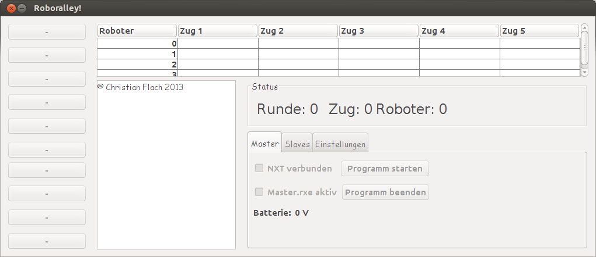

What is RoboRally?
In RoboRally, players assume control of one of many "Robot Control Computers" in a dangerous widget factory filled with moving, course-altering conveyor belts, metal-melting laser beams, bottomless pits, crushers, and a variety of other obstacles. The goal in a game of RoboRally is, apart from survival, to be the first to reach a pre-designated number of checkpoints in a particular order. However, the real difficulty in RoboRally is movement, which is accomplished with the randomly dealt program cards.
Source: http://en.wikipedia.org/w/index.php?title=RoboRally&oldid=549103996, read more.
Below you see a picture of how the board game looks like:

© by Moroboshi (Own work) [CC-BY-SA-3.0], via Wikimedia Commons
Now we had the idea to build and play the game in real with real robots. As we had several LEGO® NXTs, we decided to programm and construct 4 NXTs playing RoboRally. That was at the beginning of 2013.
The basics
We used four Lego® MINDSTORMS NXT 2.0 and several additional LEGO® bricks. One NXT is our master, which takes full control on the three slaves, connected via Bluetooth. The NXTs are programmed in Not eXactly C. The movement cards are virtually displayed on a laptop connected to the master via USB. Although there is a computer available, we decided to do all the calculations on the NXT and use the computer only as a input device to make it more difficult. The laptop runs a java programm which you can see on the right.
The files
If you take a look into the github repo you will see that there are two main folders:
JavaJava contains the NetBeans project for the Java program. If you just want to use it, got to
Java/distand runRoboralley.jar. IMPORTANT: This will only work on Windows, because it depends on NextTool.exe to communicate with the NXT. By default this file has to be located atC:\\\"Program Files (x86)\"\\BricxCC\\NextTool.exe, but you can change the location in the program's settings.SourceHere we go! This directory contains the source files for the NXTs. For the master, compile and download the
Master.nxcfile. For the slaves, compile and download theSlave.nxcfile. IMPORTANT: All NXTs neeed to have the Enhanced NBC/NXC Firmware installed.
How do I get this project working?
Here are step-by-step instructions on how to get your own RoboRally playing robots:
- Make sure to have at least two NXTs and one Windows computer.
- Download the source code from github.
- Download and install the Bricx Command Center 3.3
- Download the Enhanced NBC/NXC Firmware onto every NXT using the Bricx Command Center.
- Open
Global.hwith Bricx Command Center. Change the options to match your circumstances. It should look like this:/** * @file Global.h */ /** * @name Unveraenderliche Konstanten * @warning Werte NICHT veraendern! * @{ */ #define NACH_RUNDE 1 // Do not change #define NACH_ZUG 2 // Do not change /**@}*/ #define ANZAHL_ZUEGE 5 // Do not change #define ANZAHL_ROBOTER 3 // Number of slaves #define LCD_ZEICHEN_PRO_ZEILE 16 // Do not change // Shall a checkpoint be saved every move ("NACH_ZUG") // or every round ("NACH_RUNDE")? #define CHECKPOINT_UPDATE NACH_RUNDE /** * @brief Soll das Spielfeld auf dem Display ausgegeben werden? */ #define SPIELFELD_AUSGEBEN 0 //Shall the field be displayed on the screen? - Take a look into
Spielfeld.h. Check these lines:/// The x-length of the biggest field you use. #define SPIELFELD_MAX_X 10 /// The y-length of the biggest field you use. #define SPIELFELD_MAX_Y 10 /// The name of the field to download #define SPIELFELD "feld_lndw.txt" #download "feld_lndw.txt" - Compile and download
Slave.nxconto every slave. - Compile and download
Master.nxconto the master. - Connect every slave to the master via Bluetooth. Start at connection one.
- Start the
Slaveprogram on every slave - Start the
Masterprogram on the master
Roadmap
Here is a short list of features not being implemented:
- Roboter laser
- Roboter damage
- Field laser
- More than three roboters
- Conveyor belts
- Rotation fields
- Crushers
Why did you do that?
Every week, I go to Roberta at TU Berlin. We searched for a nice project to work on and came up with RoboRally. It took approximately four months form the first ideas to the current version.
License
Feel free to use the source code according to GNU/GPLv3 (or at your option, any later version).